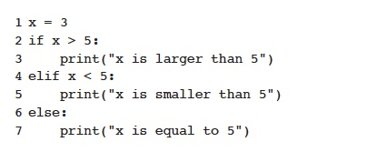

Identation in Python, as we have learned, determines how statements are grouped together. For example, consider the following code:
For the above code, the indentation tells us which code is executed depending on which statement is True.
The indentation rules layed out by PEP8:
Tabbing can be much easier than the space bar so we will set up the editor so it inserts spaces when we tab.